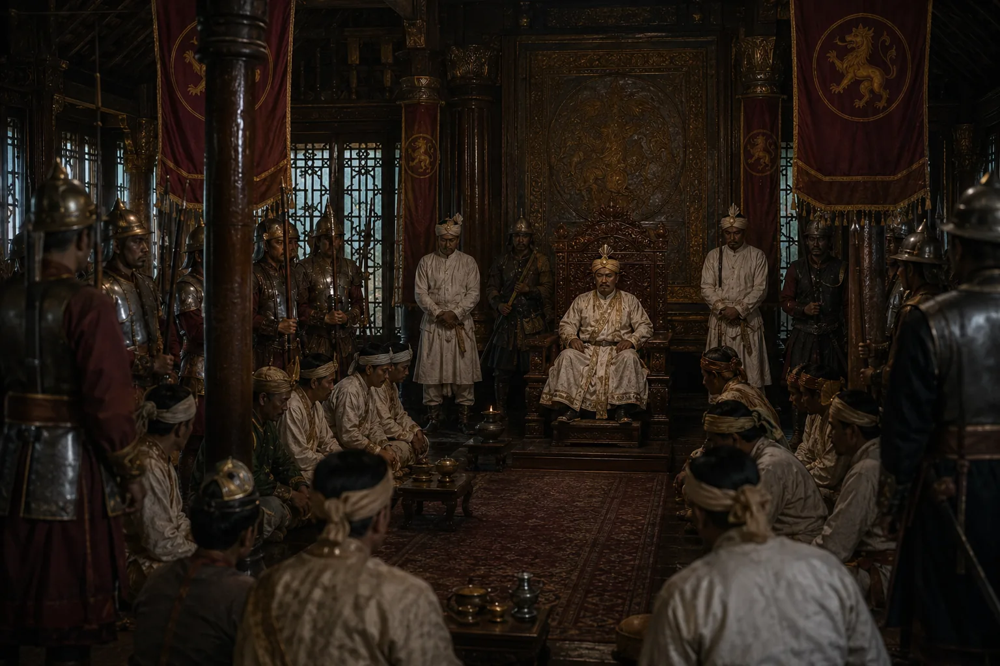

Restoration of Chandrakanta Singha as Burmese Puppet
1819 · The days of the Burmese

Burmese restore ear-mutilated Chandrakanta to the throne, but Burmese generals retain real power.
Sources have not yet been catalogued for this record.
People: Chandrakanta Singha (Sudingphaa)